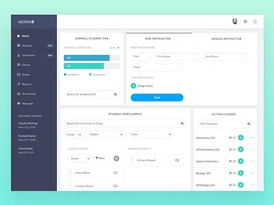
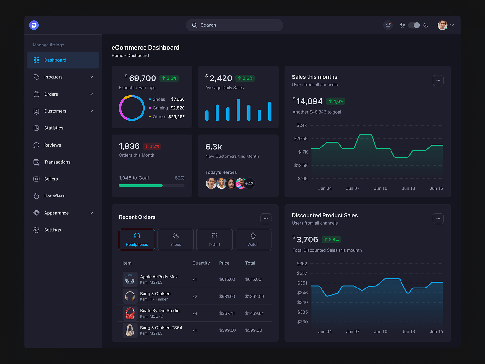
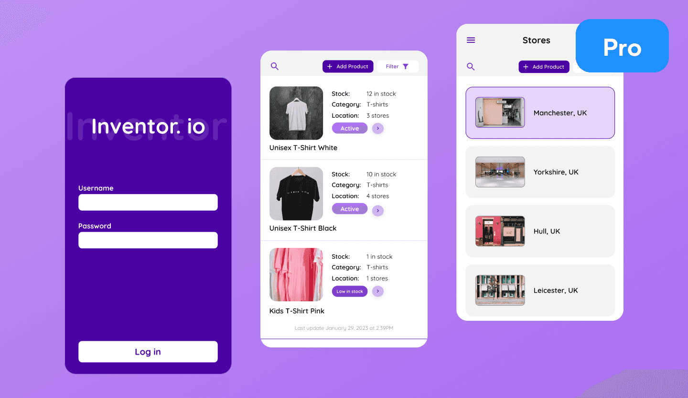

Hi, I'm a BS Information Systems student who enjoys building practical solutions through technology. I like turning ideas into working systems, exploring how technology can solve real-world problems, and learning something new every day.
"Learning Today, Building for Tomorrow."
Learn MoreI'm a BS Information Systems student who enjoys learning about technology and creating things that can be useful in real life. I like exploring web development, databases, and system design, and I enjoy turning simple ideas into working solutions. I may still be learning and improving my skills, but I'm always willing to take on new challenges and learn from my experiences.
My goal is to create useful and practical solutions through technology while gaining more experience in web development, databases, and system development. I want to learn from every project and challenge I encounter, continuously improve my skills, and grow into a skilled and responsible IT professional. I also hope to use my knowledge and skills to contribute to real-world projects and create solutions that can make a meaningful difference.
Creating and organizing the structure of web pages.
Designing and styling websites to make them clear and user-friendly.
Adding interactive features and functionality to web pages.
Creating, organizing, and managing data using databases.
Understanding and developing systems that can solve practical problems.
Analyzing problems and finding practical solutions using technology.

A system designed to manage student enrollment records and organize student information for a faster and more convenient enrollment process.

A dashboard that presents important data and information through visualizations, charts, and summaries to make data easier to understand.

A system that helps manage product records, monitor stock levels, and identify items that need restocking for better inventory management.
| Year | Title | School / Organization | Details |
|---|---|---|---|
| 2022-2026 | BS Information Systems | Caraga State University | Studying web development, programming, databases, data Analysis, and system design. |
| 2020-2022 | Computer Systems Servicing | Bucas Grande Foundation College | Complete Senior Highschool with a focus on ICT subjects. |
| 2024 | Department of Information and Communications Technology (DICT) | DICT - Butuan City | Learned the basics of HTML, CSS, and building responsive web pages. |